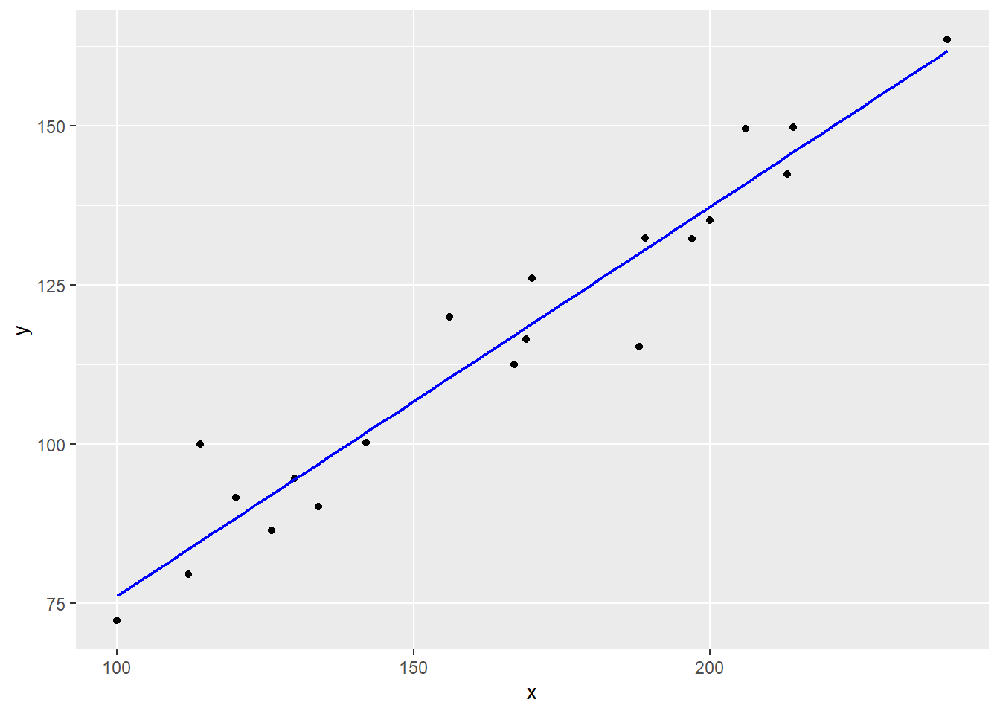
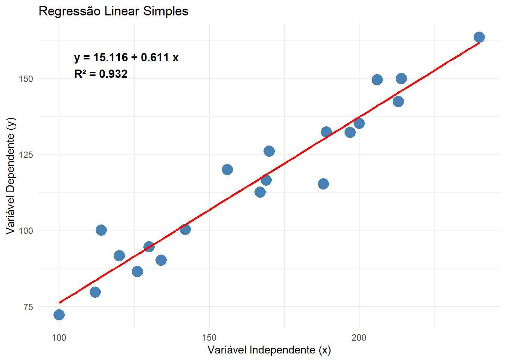
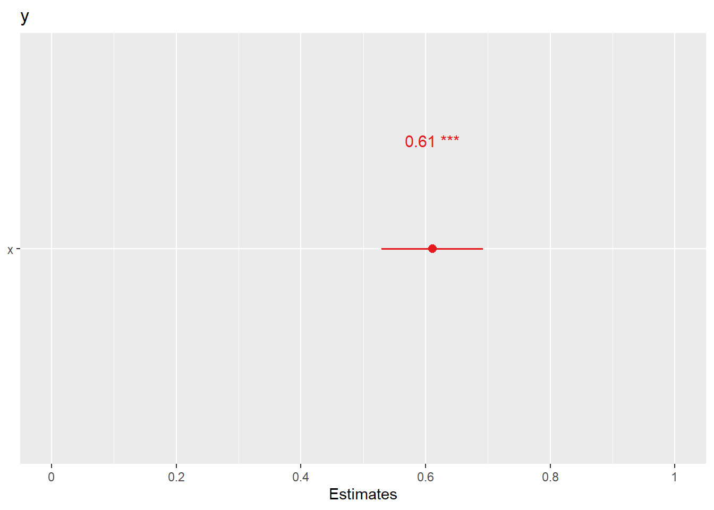
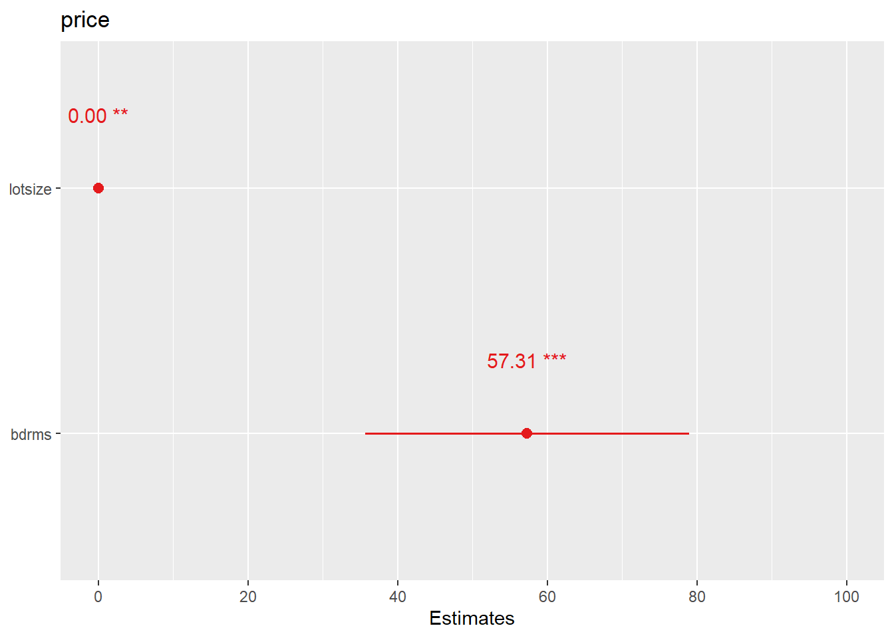

#limpar ambiente
rm(list = ls())
#importar dados
dados <- read.csv("simple_reg.csv")Regressão linear
Uma regressão é uma técnica que estabelece uma relação entre uma variável dependente e uma ou mais variáveis independentes. A regressão linear é um tipo de regressão que estabelece uma relação linear entre a variável dependente e as variáveis independentes. O objetivo é estudar o impacto das variáveis independentes na dependente. A variável dependente também pode ser definida como variável explicada, enquanto que as independentes também podem ser definidas como variáveis explicativas. Numa regressão a variável dependente é representada por \(y\) e as variáveis independentes são representadas, genericamente, por \(x_1, x_2, ..., x_k\). O modelo de regressão linear é representado pela seguinte função:
\[ y = f(x_1, x_2,..., x_k) \tag{1}\]
- Exemplo de uma aplicação de uma função: estudar o efeito do salário na produtividade dos trabalhadores. Neste caso, a variável dependente é a produtividade dos trabalhadores e a variável independente é o salário dos trabalhadores. O modelo de regressão linear é representado pela seguinte função:
\[ produtividade = f(salário) \tag{2}\]
Neste caso vai ser analisado o efeito do salário na produtividade dos trabalhadores.
Também é usual utilizar os indices \(i\), \(t\) e \(i,t\) para representar uma função de acordo com os tipos de dados.
Função com dados seccionais:
\[ y_i = f(x_{1i}, x_{2i}, ..., x_{ki}) \tag{3}\]
em que o \(i\) representa a observação ou a entidade.
Função com séries temporais:
\[ y_t = f(x_{1t}, x_{2t}, ..., x_{kt}) \tag{4}\]
em que o {t} representa o tempo.
Função com dados em painel:
\[ y_{it} = f(x_{1it}, x_{2it}, ..., x_{kit}) \tag{5}\]
em que o \({i}\) representa a entidade e o \({t}\) representa o tempo.
Regressão Linear Simples
O modelo de regressão linear simples é um modelo que estabelece uma relação linear entre uma variável dependente e uma variável independente. Numa regressão simples as variável dependente é uma variável contínua e a variável independente pode ser uma variável contínua ou uma variável categórica. Mais à frente será abordado o caso de uma variável dependente categórica. O modelo de regressão linear simples é representado pelas regressões populacional e amostral. A regressão populacional é a relação entre a variável dependente e a variável independente na população. A regressão amostral é a relação entre a variável dependente e a variável independente na amostra. O modelo de regressão linear simples é representado pelas seguintes equações.
Regressão populacional:
\[ y = \beta_0 + \beta_1 x \tag{6}\]
Regressão amostral:
\[ \hat{y} = \hat{\beta}_0 + \hat{\beta}_1 x + \epsilon \tag{7}\]
em que:
- \(y\) é a variável dependente
- \(x\) é a variável independente
- \(\beta_0\) é a constante
- \(\beta_1\) é o coeficiente angular
- \(\epsilon\) é o erro aleatório
O ^ significa estimativa. O erro aleatório é uma variável aleatória que representa a diferença entre o valor observado da variável dependente e o valor previsto da variável dependente através da regressão. O erro aleatório é representado pela seguinte equação:
\[ \epsilon = y - \hat{y} \tag{8}\]
O \(\hat{y}\) é o valor previsto da variável dependente e é calculado através dos coeficientes estimados \(\hat{\beta}_0\) e \(\hat{\beta}_1\) e dos valores de \(x\) para cada observação.
Método de estimação
O objetivo da regressão linear é estimar os coeficientes \(\beta_0\) e \(\beta_1\) que minimizam a soma dos quadrados dos erros. Para este exemplos vamos utilizar o ficheiro simple_reg.csv que contém as variáveis y e x.
O método de estimação dos coeficientes \(\beta_0\) e \(\beta_1\) é o método dos mínimos quadrados ordinários (MQO). O método dos mínimos quadrados ordinários (MQO) é um método que minimiza a soma dos quadrados dos erros. O método do mínimo quadrado minimiza a distância entre as observações e a linha de regressão. Os coeficientes \(\beta_0\) e \(\beta_1\) são estimados da seguinte forma:
\[ \hat{\beta}_1 = \frac{\sum_{i=1}^{n} (x_i - \bar{x})(y_i - \bar{y})}{\sum_{i=1}^{n} (x_i - \bar{x})^2}= \frac{\sum_{i=1}^{n} x_i y_i - n \bar{x} \bar{y}}{\sum_{i=1}^{n} x_i^2 - n \bar{x}^2} \tag{9}\]
em que:
- \(x_i\) é o valor da variável independente para a observação \(i\)
- \(\bar{x}\) é a média dos valores da variável independente
- \(y_i\) é o valor da variável dependente para a observação \(i\)
- \(\bar{y}\) é a média dos valores da variável dependente
- \(n\) é o número de observações
No Rpodemos calcular o \(beta_1\) da seguinte forma:
# Número de observações
n <- nrow(dados)
# Médias
x_bar <- mean(dados$x)
y_bar <- mean(dados$y)
#calculae beta1
beta1 <- (sum(dados$x * dados$y) - n * x_bar * y_bar) /
(sum(dados$x^2) - n * x_bar^2)
# Resultados
beta1[1] 0.6108889Onde a função sum() é utilizada para calcular a soma da coluna.
O coeficiente \(\beta_0\) é calculado da seguinte forma:
\[ \hat{\beta}_0 = \bar{y} - \hat{\beta}_1 \bar{x}= \frac{\sum_{i=1}^{n} y_i}{n} - \hat{\beta}_1 \frac{\sum_{i=1}^{n} x_i}{n} \tag{10}\]
Que podemos obter da seguinte forma já com o \(beta_1\) obtido:
# calcular beta0
beta0 <- y_bar - beta1 * x_bar
beta0[1] 15.11641Em que é minimizada a soma dos quadrados dos erros (\(SSE\)) que é representada pela seguinte equação:
\[ SSE = \sum_{i=1}^{n} (y_i - \hat{y}_i)^2 \tag{11}\]
em que:
- \(y_i\) é o valor observado da variável dependente
- \(\hat{y}_i\) é o valor previsto da variável dependente
- \(n\) é o número de observações
O coeficiente \(\beta_1\) mede a mudança na variável dependente \(y\) associada a uma unidade de mudança na variável independente \(x\). O coeficiente \(\beta_0\) é a constante da linha de regressão e mede o valor da variável dependente \(y\) quando a variável independente \(x\) é igual a zero.
Estimar regressão simples em R
Existem várias funções que permitem estimar modelos de regressão em R sem utiliar muitos cáclulos. Podemos utilizar a função lm() que significa “linear model”. A função lm() tem a seguinte sintaxe:
modelo <- lm(y ~ x, data = dados)em que:
modeloé o objeto que armazena o modelo de regressãoyé a variável dependentexé a variável independentedataé o conjunto de dados
A variável dependente e a variável independente são separadas por ~, que significa “em função de”.
A função lm tem várias opções que permitem personalizar o modelo de regressão. Aconstante é introduzida por defeito.
Podemos retirar a constante do modelo de regressão utilizando o argumento -1 na fórmula. Por exemplo, podemos escrever o seguinte comando:
modelo <- lm(y ~ x - 1, data = dados)Por exemplo, podemos retirar uma constante ao modelo de regressão, podemos adicionar termos de interação, podemos adicionar termos polinomiais, etc.
Os argumentos mais comuns da função lm são:
formula: fórmula que define o modelo de regressãodata: conjunto de dadossubset: subconjunto de observaçõesweights: pesos das observaçõesna.action: método para lidar com valores em falta
Se utilizarmos os argumentos na ordem correta, podemos omitir os nomes dos argumentos. Por exemplo, podemos escrever o seguinte comando:
modelo <- lm(y ~ x, dados)Mas se por alguma razão não quisermos utilizar a ordem dos argumentos, é necessário utilizar os nomes dos argumentos e um =. Por exemplo, podemos escrever o seguinte comando:
modelo <- lm(data = dados, formula = y ~ x)Esta opção pode ser útil quando pretendemos utilizar apenas alguns argumentos da função. Para ver todas as opções da função lm, podemos utilizar o comando ?lm ou help(lm) diretamente na consola do R.
Exemplo de uma aplicação de uma regressão simples em R:
#importar dados
dados <- read.csv("simple_reg.csv")
#ver os dados
head(dados) time y x
1 1 72.30 100
2 2 91.65 120
3 3 135.20 200
4 4 94.60 130
5 5 163.50 240
6 6 100.00 114#estimar regressão simples
modelo <- lm(y ~ x, data = dados)
#ver resultados do modelo
summary(modelo)
Call:
lm(formula = y ~ x, data = dados)
Residuals:
Min 1Q Median 3Q Max
-14.664 -3.913 -1.735 3.409 15.242
Coefficients:
Estimate Std. Error t value Pr(>|t|)
(Intercept) 15.11641 6.56564 2.302 0.0335 *
x 0.61089 0.03884 15.730 5.81e-12 ***
---
Signif. codes: 0 '***' 0.001 '**' 0.01 '*' 0.05 '.' 0.1 ' ' 1
Residual standard error: 6.88 on 18 degrees of freedom
Multiple R-squared: 0.9322, Adjusted R-squared: 0.9284
F-statistic: 247.4 on 1 and 18 DF, p-value: 5.808e-12A função summary() permite ver os resultados do modelo de regressão. O output apresenta os coeficientes estimados, o desvio padrão dos coeficientes, o valor t, o valor p, o R², o R² ajustado, o desvio padrão dos resíduos, o número de observações, etc.
Em vez de armazenar o modelo num objeto, também podemos insefrir a função lm() diretamente na função summary(), como no seguinte exemplo:
summary(lm(y ~ x, data = dados))
Call:
lm(formula = y ~ x, data = dados)
Residuals:
Min 1Q Median 3Q Max
-14.664 -3.913 -1.735 3.409 15.242
Coefficients:
Estimate Std. Error t value Pr(>|t|)
(Intercept) 15.11641 6.56564 2.302 0.0335 *
x 0.61089 0.03884 15.730 5.81e-12 ***
---
Signif. codes: 0 '***' 0.001 '**' 0.01 '*' 0.05 '.' 0.1 ' ' 1
Residual standard error: 6.88 on 18 degrees of freedom
Multiple R-squared: 0.9322, Adjusted R-squared: 0.9284
F-statistic: 247.4 on 1 and 18 DF, p-value: 5.808e-12Também é possível estimar a regressão simples com a biblioteca tidymodels.
library(tidymodels)── Attaching packages ────────────────────────────────────── tidymodels 1.4.1 ──✔ broom 1.0.10 ✔ recipes 1.3.1
✔ dials 1.4.2 ✔ rsample 1.3.1
✔ dplyr 1.1.4 ✔ tailor 0.1.0
✔ ggplot2 4.0.0 ✔ tidyr 1.3.1
✔ infer 1.0.9 ✔ tune 2.0.0
✔ modeldata 1.5.1 ✔ workflows 1.3.0
✔ parsnip 1.3.3 ✔ workflowsets 1.1.1
✔ purrr 1.1.0 ✔ yardstick 1.3.2 ── Conflicts ───────────────────────────────────────── tidymodels_conflicts() ──
✖ purrr::discard() masks scales::discard()
✖ dplyr::filter() masks stats::filter()
✖ dplyr::lag() masks stats::lag()
✖ recipes::step() masks stats::step()# Definir o modelo
modelo_spec <- linear_reg() |>
set_engine("lm")
# Ajustar o modelo
modelo_fit <- modelo_spec |>
fit(y ~ x, data = dados)
# Ver resultados do modelo
modelo_fitparsnip model object
Call:
stats::lm(formula = y ~ x, data = data)
Coefficients:
(Intercept) x
15.1164 0.6109 Primeiro, definimos o modelo com a função linear_reg(), e esclhemos o motor de estimação com a função set_engine(). Posteriormente estimamos o modelo com a função fit().
A biblioteca tidymodels é uma das mais completas para a análise de dados em R. É mais adequada para modelos complexos, por isso a sintáxe pode parece mais complicada. No entanto, não a podemos colocar de parte, uma vez que vai ser utilizada numa fase mais avaçada da econometria aplicada.
Obter os resíduos e os valores previstos
Os valores previstos são os valores da variável dependente estimados pelo modelo de regressão. Ou seja:
\[ \hat{y} = \hat{\beta}_0 + \hat{\beta}_1 x \tag{12}\]
Para os obter temos de substituir os valores de \(x\) na equação considerando os valores dos coeficientes. De seguida vamos obter os valores previstos \(\hat{y}\) (y_hat) com a função predict:
# Obter os valores previstos
dados$y_hat <- predict(modelo)Em alternativa à função predict() também seria possível recorrer à função fitted(). A função predict() e a função fitted() permitem obter os valores previstos da variável dependente a partir do modelo estimado. O valor previsto \(\hat{y}\) é calculado através dos coeficientes estimados \(\hat{\beta}_0\) e \(\hat{\beta}_1\) e dos valores de \(x\) para cada observação. Contudo a função predict() também permite prever a variável dependente considerando outros valores. Por exemplo, responder à questão “Qual seria o preço previsto de \(y\) para um valor de \(x\)=120?”. Então:
y_previsto <- predict(modelo, newdata = data.frame(x = 120))
y_previsto 1
88.42308 A resposta seria 88.423. O argumento newdata permite especificar novos valores para as variáveis independentes.
Os resíduos são a diferença entre os valores observados e os valores previstos da variável dependente:
\[ \hat{\epsilon} = y - \hat{y} \tag{13}\]
Os valores dos resíduos \({\epsilon}\) também poderiam ser obtidos através da diferença entre os valores observados e os valores previstos, que é basicamente a distância das observação em relação à reta do modelo linear. Para isso, podemos utilizar a função residuals() ou a função resid()
# Obter os resíduos
dados$residuos <- residuals(modelo)Para compararmos as colunas obtidas:
#Carregar bibliotecas
library(ggplot2)
#ou
library(tidyverse)# Ver os resultados
dados |> select(y, y_hat, residuos) y y_hat residuos
1 72.30 76.20530 -3.90529907
2 91.65 88.42308 3.22692287
3 135.20 137.29419 -2.09418941
4 94.60 94.53197 0.06803383
5 163.50 161.72975 1.77025446
6 100.00 84.75774 15.24225629
7 86.50 92.08841 -5.58841055
8 142.36 145.23575 -2.87574515
9 120.00 110.41508 9.58492234
10 112.56 117.13486 -4.57485559
11 132.30 130.57441 1.72558853
12 149.80 145.84663 3.95336595
13 115.30 129.96352 -14.66352257
14 132.20 135.46152 -3.26152270
15 149.50 140.95952 8.54047717
16 100.25 101.86263 -1.61263301
17 79.60 83.53597 -3.93596591
18 90.20 96.97552 -6.77552178
19 116.50 118.35663 -1.85663340
20 126.00 118.96752 7.03247770Interpretar coeficientes
Os coeficientes estimados do modelo de regressão linear simples podem ser interpretados da seguinte forma:
\(\hat{\beta_0}\) (constante): representa o valor esperado de \(y\) quando \(x = 0\). Por outras palavras, é o ponto onde a linha de regressão interceta o eixo \(y\).
\(\hat{\beta_1}\) (coeficiente de x): representa a variação esperada em \(y\) para uma variação unitária em \(x\), mantendo todas as outras variáveis constantes (no caso de múltiplas variáveis independentes).
É necessário ter muita atenção às unidades e às transformações feitas nas variáveis, pois isso pode afetar a forma como interpretamos o valor dos coeficientes.
Visualizar o modelo com ggplot2
Para visualizar o modelo de regressão linear simples, podemos utilizar a biblioteca ggplot2.
library(tidyverse)Para criar o gráfico de dispersão com a linha de regressão, podemos utilizar o seguinte código.
dados |> ggplot(aes(x = x, y = y)) +
geom_point() +
geom_smooth(method = "lm", se = FALSE, color = "blue", linewidth = 0.8)`geom_smooth()` using formula = 'y ~ x'
Podemos elaborar um pouco mais o gráfico ao adicionar a equação da reta, o valor de R², e criar legendas:
# Estimar modelo e criar etiqueta com equação e R²
library(ggplot2)
# Criação de dados de exemplo para replicação,
# uma vez que os seus não foram fornecidos
# O seu modelo de regressão
modelo <- lm(y ~ x, data = dados)
beta0 <- coef(modelo)[1]
beta1 <- coef(modelo)[2]
r2 <- summary(modelo)$r.squared
label_eq <- paste0("y = ", round(beta0, 3),
" + ", round(beta1, 3),
" x\nR² = ", round(r2, 3))
# Gráfico com melhor visualização
ggplot(dados, aes(x = x, y = y)) +
geom_point(color = "steelblue", size = 5) +
geom_smooth(method = "lm", se = FALSE, color = "red") +
annotate("text", x = min(dados$x) + 5, y = max(dados$y) - 5,
label = label_eq, hjust = 0, vjust = 1,
size = 4, fontface = "bold") +
labs(title = "Regressão Linear Simples",
x = "Variável Independente (x)",
y = "Variável Dependente (y)") +
theme_minimal()`geom_smooth()` using formula = 'y ~ x'
Visualizar os coeficientes
Com sjPlot é possível visualizar os coeficientes de forma gráfica.
# Instalar e carregar a biblioteca sjPlot
install.packages("sjPlot")The following package(s) will be installed:
- sjPlot [2.9.0]
These packages will be installed into "~/livro-git/tiagolafonso.github.io/renv/library/windows/R-4.4/x86_64-w64-mingw32".
# Installing packages --------------------------------------------------------
- Installing sjPlot ... OK [linked from cache]
Successfully installed 1 package in 14 milliseconds.library(sjPlot)
Attaching package: 'sjPlot'The following object is masked from 'package:ggplot2':
set_theme# Criar o gráfico dos coeficientes
plot_model(modelo,show.values = TRUE, value.offset = 0.3)
Regressão Linear Múltipla
O modelo de regressão linear múltipla é um modelo que estabelece uma relação linear entre uma variável dependente e duas ou mais variáveis independentes. O modelo de regressão linear múltipla para \(k\) variáveis independentes é representado pela seguinte equação:
Regressão populacional:
\[ y = \beta_0 + \beta_1 x_1 + \beta_2 x_2 + ... + \beta_k x_k \tag{14}\]
em que:
Os parâmetros \(\beta_0, \beta_1, \beta_2, ..., \beta_k\) são os coeficientes que medem a relação entre a variável dependente \(y\) e as variáveis independentes \(x_1, x_2, ..., x_k\). O coeficiente \(\beta_0\) é a constante da linha de regressão e mede o valor da variável dependente \(y\) quando todas as variáveis independentes \(x_1, x_2, ..., x_k\) são iguais a zero.
Regressão amostral:
\[ \hat{y} = \hat{\beta}_0 + \hat{\beta}_1 x_1 + \hat{\beta}_2 x_2 + ... + \hat{\beta}_k x_k + \epsilon \tag{15}\]
ou:
\[ Y_i = \sum^{k}_{m=0}\beta_mX_{im}+\mu_i \tag{16}\]
onde:
\(\hat{y}\) é o valor estimado da variável dependente
\(x_1, x_2, ..., x_k\) são as variáveis independentes
\(\beta_0\) é a constante
\(\hat{\beta}_0, \hat{\beta}_1, \hat{\beta}_2, ..., \hat{\beta}_k\) são os coeficientes estimados
\(\epsilon\) é o erro
A interpretação dos coeficientes \(\beta_1, \beta_2, ..., \beta_k\) é a mesma que na regressão simples. O coeficiente \(\beta_1\) mede a mudança na variável dependente \(y\) associada a uma unidade de mudança na variável independente \(x_1\) mantendo as outras variáveis independentes \(x_2, ..., x_k\) constantes, ou seja, ceteris paribus.
Aplicação em R:
Método de estimação da regressão múltipla - Método dos mínimos quadrados (OLS)
O método de estimação dos coeficientes \(\beta_0, \beta_1, \beta_2, ..., \beta_k\) é o método dos mínimos quadrados ordinários (MQO). O método dos mínimos quadrados ordinários (MQO) é um método que minimiza a soma dos quadrados dos erros. O método do mínimo quadrado minimiza a distância entre as observações e a linha de regressão. Os coeficientes \(\beta_0, \beta_1, \beta_2, ..., \beta_k\) são estimados da seguinte forma com cálculo matricial:
\[ \hat{\beta} = (X'X)^{-1}X'Y \tag{17}\]
em que:
\(X\) é a matriz de variáveis independentes
\(Y\) é o vetor da variável dependente
\(\hat{\beta}\) é o vetor de coeficientes estimados
\(X'\) é a transposta da matriz de variáveis independentes
\((X'X)^{-1}\) é a inversa da matriz de variáveis independentes
Estimar regressão múltipla no R
Para este exemplo vamos utilizar os dados hprice1 da biblioteca wooldridge. Para carregar os dados:
rm(list = ls())
library(wooldridge)
data("hprice1")Para ver a definição das variáveis recorrermos à documentação do conjunto de dados:
?hprice1O conjunto de dados hprice1 contém 88 observações e 10 variáveis. A variável dependente é o preço da casa (price) e algumas das variáveis independentes são: lotsize (tamanho do lote), bdrms (número de quartos), e lotsize (tamanho do lote). Neste exemplo de regressão múltipla vamos estimar o preço das casas com base nestas variáveis:
\[ price=\beta_0 + \beta_1 \cdot lotsize + \beta_2 \cdot bdrms + \epsilon \tag{18}\]
Existem várias formas de estimar os coeficientes, entre elas, com cálculo matricial e com a função lm()
Matrizes
Vamos estimar os coeficientes de acordo com a Equation 17. Primeiro, vamos definir a variável dependente Y e a matriz de variáveis independentes X. A matriz X deve incluir uma coluna de 1’s para a constante.
Y <- hprice1$price
X <- model.matrix(~ lotsize + bdrms, data = hprice1)
X_t <- t(X) # calcular a transposta de X'
X_t_X_inv <- solve(X_t %*% X) # multiplicar X' por X
X_t_Y <- X_t %*% Y
beta_hat <- X_t_X_inv %*% X_t_Y
beta_hat [,1]
(Intercept) 63.262239424
lotsize 0.002858261
bdrms 57.312851121Para ver as matrizes e verificar que a coluna de 1’s foi criada com a função model.matrix(), a coluna de 1’s é normalmente designada por \(X_0\).
View(Y)
View(X)De acordo com a Equation 17 vamos ter de:
Calcular a transporsta da matriz de variáveis independentes \(X\) (
X_t)Multiplicar a matriz de \(X'\) pela matriz \(X\) e obter a inversa da matriz resultante \({X'X}^{-1}\), ou seja o objeto
X_t_X_inv.Multiplicar \(X'\) pela matriz \(Y\) para obter \(X'Y\) (
X_t_Y)Multiplicar \({X'X}^{-1}\) por \(X'Y\) para obter os coeficientes estimados \(\hat{\beta}\) (
beta_hat)
Função lm()
Para estimar uma regressão múltipla no R de forma mais rápida, utilizamos a função lm(), como na regressão simples, com a seguinte sintaxe:
modelo <- lm(y ~ x1 + x2 + x3, data = dados)em que as variáveis independentes \(x_1, x_2, ..., x_k\) são separadas por +. Para estimar umo modelo de regressão múltipla com todas as variáveis independentes, utilizamos o seguinte comando:
modelo <- lm(y ~ ., data = dados)Em que o . representa todas as variáveis independentes presentes no conjunto de dados (data.frame). Para estimar uma regressão múltipla sem a constante, utilizamos o seguinte comando:
modelo <- lm(y ~ x1 + x2 + ... + xk - 1, data = dados)em que, mais uma vez, o - 1 indica que não pretendemos incluir a constante no modelo de regressão.
Estimar a regressão múltipla com a função lm() com Equation 18:
library(wooldridge)
data(hprice1)
modelo_2 <- lm(price ~ lotsize + bdrms, data = hprice1)
summary(modelo_2)
Call:
lm(formula = price ~ lotsize + bdrms, data = hprice1)
Residuals:
Min 1Q Median 3Q Max
-239.420 -53.179 -5.284 34.195 286.567
Coefficients:
Estimate Std. Error t value Pr(>|t|)
(Intercept) 6.326e+01 3.962e+01 1.597 0.11403
lotsize 2.858e-03 9.001e-04 3.175 0.00209 **
bdrms 5.731e+01 1.088e+01 5.266 1.04e-06 ***
---
Signif. codes: 0 '***' 0.001 '**' 0.01 '*' 0.05 '.' 0.1 ' ' 1
Residual standard error: 84.62 on 85 degrees of freedom
Multiple R-squared: 0.3368, Adjusted R-squared: 0.3212
F-statistic: 21.58 on 2 and 85 DF, p-value: 2.627e-08Os coeficientes obtidos foram:
| Variável | Coeficiente |
|---|---|
| (Intercept) | 63.262239424 |
| lotsize | 0.002858261 |
| bdrms | 57.312851121 |
A unidade do tamanho do lote (lotsize) é medida em squared feet, enquanto a unidade do número de quartos (bdrms) é medida em unidades e o preço (price) é medido em milhares de dólares. Então a interpretação dos coeficientes é a seguinte:
- O coeficiente da constante (intercept) indica que, quando o tamanho do lote e o número de quartos são iguais a zero, o preço esperado da casa é de 63.262239424 milhares de dólares.
- O coeficiente de
lotsizeindica que, para cada aumento de uma unidade no tamanho do lote (em squared feet), o preço da casa aumenta em média 0.002858261 milhares de dólares (ou aproximadamente 2.858 dólares), ceteris paribus (mantendo todas as outras variáveis constantes) - O coeficiente de
bdrmsindica que, para cada aumento de uma unidade no número de quartos, o preço da casa aumenta em média 57.312851121 milhares de dólares (ou 57312.851121 dólares), ceteris paribus.
Também podemos visualizar os coeficientes de uma regressão múltipla com a função plot_model() da biblioteca sjPlot, como foi feito na regressão simples:
# Carregar a biblioteca sjPlot
library(sjPlot)
#criar o gráfico dos coeficientes
plot_model(modelo_2, show.values = TRUE, value.offset = 0.3)
Qual a importância de ceteris paribus?
A expressão ceteris paribus é fundamental na econometria em economia, pois permite isolar o efeito de uma variável em relação a outra, mantendo todas as outras variáveis constantes. Isso é especialmente importante em modelos de regressão múltipla, onde várias variáveis independentes podem influenciar a variável dependente simultaneamente. Ao considerar o efeito de uma variável específica, como o número de quartos em uma casa, ceteris paribus garante que qualquer mudança observada no preço da casa seja atribuída exclusivamente a essa variável, sem a interferência de outras variáveis, como o tamanho do lote ou a localização, por exemplo. Isto permite uma análise mais precisa e confiável das relações causais entre as variáveis, facilita a tomada de decisão informada com base nos resultados do modelo econométrico.
Qualidade do ajuste do modelo de regressão
A qualidade do ajuste do modelo de regressão aos dados é medida através do coeficiente de determinação \(R^2\) e do coeficiente de determinação ajustado \(R^2\) ajustado. O \(R^2\) varia de 0 a 1 e quanto mais próximo de 1, melhor o ajuste do modelo aos dados. Por exemplo um \(R^2\) de 1 indica que 100% da variabilidade da variável dependente é explicada pelas variáveis independentes no modelo, ou seja, todos os pontos estão exatamente na linha de regressão. Um \(R^2\) de 0 indica que nenhuma da variabilidade da variável dependente é explicada pelas variáveis independentes no modelo, ou seja, a linha de regressão é uma linha horizontal que passa pela média da variável dependente.
R Quadrado
O coeficiente de determinação \(R^2\) é uma medida que indica a proporção da variabilidade da variável dependente que é explicada pelas variáveis independentes no modelo. Por outras palavras, o \(R^2\) mede o quão bem o modelo de regressão se ajusta aos dados observados. O \(R^2\) é calculado da seguinte forma:
\[ R^2 = 1 - \frac{SSE}{SST} \tag{19}\]
em que:
\(SSE\) é a soma dos quadrados dos erros: \(\sum_{i=1}^{n} (\epsilon_i)^2\)
\(SST\) é a soma total dos quadrados: \(\sum_{i=1}^{n} (y_i - \bar{y})^2\)
onde:
\(\hat{y}_i\) é o valor previsto da variável dependente para a observação \(i\)
\(\bar{y}\) é a média da variável dependente
O erro contém toda a informação que o modelo não consegue explicar e essa informação é representada por \(SSE\). Enquanto que o \(SST\) representa a informação que o modelo deveria explicar em condições ideais. Neste caso, o rácio entre \(SSE\) e \(SST\) indica a proporção da variabilidade que não é explicada pelo modelo que é retirada a 100% (1 - \(\frac{SSE}{SST}\)).
O \(R^2\) também pode ser calculado através de:
\[ R^2 = \frac{SSR}{SST} \tag{20}\]
onde:
- \(SSR\) é a soma dos quadrados da regressão: \(\sum_{i=1}^{n} (\hat{y}_i - \bar{y})^2\)
No R, o \(R^2\) é apresentado por defeito na função summary() do objeto lm. Também pode ser calculado manualmente da seguinte forma:
#carregar dados
rm(list = ls())
library(wooldridge)
data("hprice1")
#estimar modelo
modelo <- lm(price ~ lotsize + bdrms, data = hprice1)
# Calcular R^2 manualmente
SSE <- sum(residuals(modelo)^2)
SST <- sum((hprice1$price - mean(hprice1$price))^2)
R2 <- 1 - SSE/SST
print(paste("R^2:", round(R2, 4)))[1] "R^2: 0.3368"#Ou
SSR <- sum((fitted(modelo) - mean(hprice1$price))^2)
R2_ <- SSR/SST
print(paste("R^2_:", round(R2_, 4)))[1] "R^2_: 0.3368"No output do objeto modelo obtido através da função lm(), podemos encontrar o valor do \(R^2\) na penúltima linha com a designação Multiple R-squaredsumm. Portanto, com um \(R^2=0.3368\) podemos concluir que as variáveis independentes explicam 33.68% da variação da variável dependente.
Existem algumas limitações do \(R^2\), nomeadamente:
- Um valor elevado do \(R^2\) não significar necessariamente que o modelo é adequado.
- O \(R^2\) é uma medida de ajustamento do modelo que não tem consideração o número de variáveis independentes no modelo. Quanto mais variáveis independentes, maior o \(R^2\).
- Elevada correlação entre variáveis independentes pode levar a um \(R^2\) elevado.
- Um \(R^2\) muito baixo não indica necessariamente que as variáveis independentes não são adequadas.
- \(R^2\) não é comparável entre modelos com diferentes transformações na variável dependente.
R Quadrado ajustado
O \(R^2\) ajustado é uma versão corrigida do R quadrado que é ajustado aos graus de liberdade do modelo. Os graus de liberdade são o número de observações menos o número de parâmetros estimados no modelo. Os graus de liberdade são basicamente o número de observações disponíveis para estimar os parâmetros do modelo. Portanto, o \(R^2\) ajustado penaliza o modelo por cada variável independente adicional. O \(R^2\) ajustado é sempre menor ou igual ao \(R^2\).
O \(R^2\) ajustado é calculado da seguinte forma:
\[ R^2_{ajustado} = 1 - \frac{SSE/(n-k-1)}{SST/(n-1)} \tag{21}\]
em que:
- \(n\) é o número de observações
- \(k\) é o número de variáveis independentes
No R:
# Calcular R^2 ajustado manualmente
n <- nrow(hprice1)
k <- length(coef(modelo)) - 1
SSE <- sum(residuals(modelo)^2)
SST <- sum((hprice1$price - mean(hprice1$price))^2)
R2_ajustado <- 1 - (SSE/(n-k-1)) / (SST/(n-1))
print(paste("R^2 ajustado:", round(R2_ajustado, 4)))[1] "R^2 ajustado: 0.3212"O \(R^2\) ajustado tem a mesma interpretação que o \(R^2\). O \(R^2\) ajustado pode ser utilizado para compara a qualidade de ajustamento de diferentes modelos de regressão com a mesma variável dependente.Por exemplo, se tivermos dois modelos de regressão, podemos comparar os \(R^2\) ajustados dos dois modelos para determinar qual é o melhor modelo. No resultado de summary(modelo) o \(R^2\) ajustado é apresentado na linha Adjusted R-squared.
Inferência estatística
A inferência estatística é utilizada para testar a significância estatística dos coeficientes estimados e a significância global do modelo. Quando os coeficientes são estatisticamente sigificantes e o modelo também, podemos generalizar os resultados para além da amostra.
Teste de significância individual dos coeficientes - teste t
Para testar a significância estatística dos coeficientes estimados, utilizamos o teste t. O teste t é utilizado para testar a hipótese nula de que o coeficiente é igual a zero. A hipótese alternativa é que o coeficiente é diferente de zero.
O valor t apresentado por defeito em qualquer software econométrico é de \(H_0: \beta_i = 0\) e \(H_1: \beta_i \neq 0\). Ou seja, é um teste bidirecional. O valor t é calculado da seguinte forma:
\[ t_{stat} = \frac{\hat{\beta_i}-b}{SE(\hat{\beta_i})} \tag{22}\]
em que:
- \(\hat{\beta_i}\) é o coeficiente estimado
- \(SE(\hat{\beta_i})\) é o desvio padrão do coeficiente estimado
- $ i$ é o número do coeficiente
- \(b\) é o valor da hipótese nula (neste caso \(b=0\))
Os coeficientes estimados são os valores de \(\hat{\beta}_0=15.11641\) e \(\hat{\beta}_1=061098\) que minimizam a soma dos quadrados dos erros. O desvio padrão (Std. Error) ou \(SE(\hat{\beta}_0)\) mede a precisão das estimativas dos coeficientes. É calculado através da fórmula:
\[ SE(\hat{\beta}_0) = \sqrt{ \hat{\sigma}^2 \left[ \frac{1}{n} + \frac{\bar{x}^2}{\sum_{i=1}^{n} (x_i - \bar{x})^2} \right] } \tag{23}\]
em que:
- \(\hat{\sigma}^2 = \frac{\sum_{i=1}^{n} (y_i - \hat{y}_i)^2}{n - 2}\) é a variância residual estimada
- \((n)\) é o número de observações
- \((\bar{x})\) é a média de \((x_i)\)
- \(\sum_{i=1}^{n} (x_i - \bar{x})^2)\) é a soma dos quadrados das diferenças de \((x)\) em relação à média
No R para ober o número de observações da amostra:
rm(list = ls())
dados <- read.csv("simple_reg.csv")
# Número de observações
n <- length(dados$x)O primeiro passo estimar o modelo e obter os resíduos e os valores previstos:
# Estimar o modelo
modelo <- lm(y ~ x,dados)
#Obter valores previstos
dados$y_hat <- predict(modelo)
#obter resíduos
dados$residuos <- residuals(modelo)Assim, já é possível o valor de \(\hat{\sigma}^2\), \(\bar{x}\) e \(S_{xx}\), \(Sxx\) e \(SE_{\hat{\beta}_0}\).
# Variância residual estimada (sigma^2)
sigma2 <- sum(dados$residuos^2) / (n - 2)
# Média de x
x_bar <- mean(dados$x)
# Soma dos quadrados de (x - x_bar)
Sxx <- sum((dados$x - x_bar)^2)
# desvio padrão de Beta0
SE_b0 <- sqrt(sigma2 * (1/n + (x_bar^2 / Sxx)))
SE_b0[1] 6.565638O desvio padrão do coeficiente \(\hat{\beta}_1\) é calculado da seguinte forma:
\[ SE(\hat{\beta}_1) = \sqrt{\frac{\hat{\sigma}^2}{\sum_{i=1}^{n} (x_i - \bar{x})^2}} \tag{24}\]
em que:
- \(\hat{\sigma}^2\) é a variância residual estimada
- \(\sum_{i=1}^{n} (x_i - \bar{x})^2\) é a soma dos quadrados das diferenças de \(x\) em relação à média ou \(S_{xx}\). No R:
# desvio padrão de Beta1
SE_b1 <- sqrt(sigma2 / Sxx)
SE_b1[1] 0.03883712Com os valores de \(SE(\hat{\beta}_0)\) e \(SE(\hat{\beta}_1)\), podemos calcular a estatística t da Equation 22. No R, primeiro é necessário obter os coeficientes estimados do objeto modelo:
# Coeficientes estimados
beta0 <- coef(modelo)[1]
beta1 <- coef(modelo)[2]No código anterior obtivemos os valores de \(\hat{\beta_0}\) e \(\hat{\beta_1}\) por ordem de apresentação no modelo. Também é possível obter os valores através do nome do coeficiente:
# Coeficientes estimados
beta0 <- coef(modelo)["(Intercept)"]
beta1 <- coef(modelo)["x"]Como os valores de \(SE(\hat{\beta_0})\) e \(SE(\hat{\beta_1})\) já foram calculados, podemos calcular os valores t:
# Valor t de Beta0
t_b0 <- beta0 / SE_b0
t_b0(Intercept)
2.302352 # Valor t de Beta1
t_b1 <- beta1 / SE_b1
t_b1 x
15.72951 A distribuição do valor t é uma distribuição t de Student com \(n - 2\) graus de liberdade, onde \(n\) é o número de observações. Com isto podemos calcular o valor de probabilidade associado ao valor t. O valor p é a probabilidade de observar um valor t tão extremo quanto o observado, sob a hipótese nula de que o coeficiente é igual a zero. O valor p é calculado da seguinte forma:
\[ p = 2 \cdot P(T > |t|) \tag{25}\]
em que:
- \(T\) é uma variável aleatória que segue uma distribuição t de Student com \(n - 2\) graus de liberdade
- \(t\) é o valor t calculado anteriormente
- 2 é um fator de ajuste para o teste bidirecional (para um teste unidirecional (ex \(H1: \beta_i > 0\)), o fator seria 1)
No R:
# Valor p de Beta0
p_b0 <- 2 * (1 - pt(abs(t_b0), df = n - 2))
p_b0(Intercept)
0.03346844 # Valor p de Beta1
p_b1 <- 2 * (1 - pt(abs(t_b1), df = n - 2))
p_b1 x
5.808243e-12 A pt() é a função de distribuição acumulada da distribuição t de Student. O abs() é a função valor absoluto (módulo). O df é o número de graus de liberdade. O 1 - pt() é a probabilidade de observar um valor t maior que o valor t calculado. O 2 * (1 - pt()) é a probabilidade de observar um valor t tão extremo quanto o observado, sob a hipótese nula de que o coeficiente é igual a zero. Foi obtido um valor p de 0.033 para o \(beta_0\) e de aproximadamente 0 para o \(beta_2\). Normalmente, estes valores de probabilidade são comparados com os valores de referência de 1%, 5% ou 10%. Rejeitamos a hipótese nula para um desses níveis quando o valor de p é inferior. Portanto, neste caso, a constante é estatisticamente diferente de zero para qualquer nível de significância, enquanto que para o \(beta_1\) rejeitamos apenas para 5% e 10%. Também seria possível avaliar a significância estatística através do t-crítico(em que rejeitamos \(H0\) se \(|t_{stat}| > t_{crítico}\)), contudo seria necessário calcualr um t-crítico para cada nível de significância estatística. O mesmo se aplicao ao intervalor de confiança que será explorado na próxima secção.
Intervalo de confiança
O intervalo de confiança dos coeficientes é obtido através da seguinte fórmula:
\[ IC(\hat{\beta}_i) = \hat{\beta}_i \pm t_{\alpha/2} \cdot SE(\hat{\beta}_i) \tag{26}\]
em que:
- \(IC(\hat{\beta}_i)\) é o intervalo de confiança para o coeficiente \(\hat{\beta}_i\)
- \(t_{\alpha/2}\) é o valor crítico da distribuição t de Student com \(n - 2\) graus de liberdade e nível de significância \(\alpha\)
- \(SE(\hat{\beta}_i)\) é o desvio padrão do coeficiente \(\hat{\beta}_i\)
No R:
# Intervalo de confiança de Beta0
IC_b0 <- c(beta0 - qt(0.975, df = n - 2) * SE_b0,
beta0 + qt(0.975, df = n - 2) * SE_b0)
IC_b0(Intercept) (Intercept)
1.322515 28.910303 # Intervalo de confiança de Beta1
IC_b1 <- c(beta1 - qt(0.975, df = n - 2) * SE_b1,
beta1 + qt(0.975, df = n - 2) * SE_b1)
IC_b1 x x
0.5292952 0.6924827 A função qt é utilizada para calcular o valor crítico da distribuição t de Student para o nível de significância desejado. Neste caso, foi utilizado um nível de significância de 5% (0.05), o que corresponde a um intervalo de confiança de 95% (0.975 para o superior e 0.025 para o inferior). O df é o número de graus de liberdade. Para calcular o intervalo de confiança para outros níveis de significância estatística, basta alterar os valores do argumento alpha na função qt(). Podemos obter o intervalo de confiança utilizando a função confint().
# Intervalo de confiança dos coeficientes
confint(modelo) #5% 2.5 % 97.5 %
(Intercept) 1.3225149 28.9103025
x 0.5292952 0.6924827confint(modelo, level = 0.90) #10% 5 % 95 %
(Intercept) 3.7311746 26.5016428
x 0.5435429 0.6782349Com a biblioteca stargazer, podemos obter os intervalos de confiança de forma mais simples e rápida.
rm(list = ls())
dados <- read.csv("simple_reg.csv")
modelo <- lm(y ~ x,dados)
library(stargazer)
Please cite as: Hlavac, Marek (2022). stargazer: Well-Formatted Regression and Summary Statistics Tables. R package version 5.2.3. https://CRAN.R-project.org/package=stargazer # Resumo do modelo
modelo %>%
stargazer(modelo, type = "text", ci = TRUE)
=============================================================
Dependent variable:
-------------------------------
y
(1) (2)
-------------------------------------------------------------
x 0.611*** 0.611***
(0.535, 0.687) (0.535, 0.687)
Constant 15.116** 15.116**
(2.248, 27.985) (2.248, 27.985)
-------------------------------------------------------------
Observations 20 20
R2 0.932 0.932
Adjusted R2 0.928 0.928
Residual Std. Error (df = 18) 6.880 6.880
F Statistic (df = 1; 18) 247.418*** 247.418***
=============================================================
Note: *p<0.1; **p<0.05; ***p<0.01Através do intervalo de confiança podemos concluir que os coeficientes do modelo são estatisticamente diferentes de zero para um nível de significância de 5% e 10%, se o intervalo de confiança não inclui o valor zero (pois \(H0: \beta_i = 0\)). Também é possível testar outras hipóteses como \(H_0: \beta_i = b\), em que \(b\) é um valor qualquer. Se o intervalo de confiança não incluir o valor \(b\), rejeitamos a hipótese nula.
Teste de significância global do modelo - Teste F
O teste de significância global do modelo é utilizado para testar a hipótese nula de que todos os coeficientes são iguais a zero. Ou seja:
\[ H_0: \beta_1 = \beta_2 = ... = \beta_k = 0 \tag{27}\]
A hipótese alternativa é que pelo menos um dos coeficientes é diferente de zero. O teste de significância global do modelo é realizado através do teste F. O valor F é calculado da seguinte forma:
\[ F_{stat} = \frac{(SSR_{restrito} - SSR_{n restrito}) / q}{SSR_{n restrito} / (n - k - 1)} \tag{28}\]
em que:
- \(SSR_{restrito}\) é a soma dos quadrados da regressão do modelo restrito (com os coeficientes nulos)
- \(SSR_{n restrito}\) é a soma dos quadrados da regressão do modelo não restrito (com os coeficientes estimados)
- \(q\) é o número de restrições (número de coeficientes nulos)
- \(n\) é o número de observações
- \(k\) é o número de variáveis explicativas
No R vamos estimar o modelo restrito (\(y_i=\beta_0\)) e o modelo não restrito (\(y_i=\beta_0 + \beta_1 x_i\)):
#carregar dados e estimar modelo
rm(list = ls())
dados <- read.csv("simple_reg.csv")
modelo <- lm(y ~ x,dados)# Modelo restrito (só com constante)
modelo_restrito <- lm(y ~ 1, data = dados)
# Modelo não restrito
modelo_n_restrito <- lm(y ~ x, data = dados)Calcular o SSR para cada um dos modelos e o \(F_{stat}\):
# Calcular o SSR para cada um dos modelos:
SSR_restrito <- sum(residuals(modelo_restrito)^2)
SSR_n_restrito <- sum(residuals(modelo_n_restrito)^2)
# Calcular o F_stat
q <- length(coef(modelo_n_restrito)) - 1
n <- nrow(dados)
k <- length(coef(modelo_n_restrito))
F_stat <- ((SSR_restrito - SSR_n_restrito) / q) / (SSR_n_restrito / (n - k - 1))
F_stat[1] 233.6721Por fim podemos obter o valor p associado ao valor F com a função pf():
# Calcular o valor p associado ao F_stat
p_value <- pf(F_stat, df1 = q, df2 = n - k - 1, lower.tail = FALSE)
p_value[1] 2.2927e-11O valor p associado ao valor F também pode ser obtido firetamente do objeto modelo (está designado por F-statistics ... p-value) e através da função anova(). Concluímos que rejeitamos a hipótese nula de que todos os coeficientes são iguais a zero para qualquer nível de significância estatística.
Teste de significância conjunta dos coeficientes
O teste de significância conjunta dos coeficientes é utilizado para testar a hipótese nula de que um conjunto de coeficientes é igual a zero. Neste exemplo vamos utilizar mais uma vez o dados hprice1 da biblioteca wooldridge.
rm(list=ls())
library(wooldridge)
data("hprice1")
# Estimar o modelo
modelo <- lm(price ~ sqrft + bdrms + lotsize, data = hprice1)Para testar a hipótese nula de que os coeficientes de sqrft e bdrms são iguais a zero (\(H0: \beta_{sqrft} = \beta_{bdrms} = 0\)), podemos recorrer a função linearHypothesis() da biblioteca car:
# Teste de significância conjunta dos coeficientes
library(car)Loading required package: carData
Attaching package: 'car'The following object is masked from 'package:purrr':
someThe following object is masked from 'package:dplyr':
recodelinearHypothesis(modelo, c("sqrft = 0", "bdrms = 0"))
Linear hypothesis test:
sqrft = 0
bdrms = 0
Model 1: restricted model
Model 2: price ~ sqrft + bdrms + lotsize
Res.Df RSS Df Sum of Sq F Pr(>F)
1 86 807257
2 84 300724 2 506533 70.744 < 2.2e-16 ***
---
Signif. codes: 0 '***' 0.001 '**' 0.01 '*' 0.05 '.' 0.1 ' ' 1Neste caso a hipótese nula é rejeitada, indicando que os coeficientes de sqrft e bdrms são estatisticamente diferentes de zero. Para testar se \(H0: \beta_{lotsize} = \beta_{sqrft}\), podemos utilizar a mesma abordagem:
# Teste de significância conjunta dos coeficientes
linearHypothesis(modelo, "lotsize=sqrft")
Linear hypothesis test:
- sqrft + lotsize = 0
Model 1: restricted model
Model 2: price ~ sqrft + bdrms + lotsize
Res.Df RSS Df Sum of Sq F Pr(>F)
1 85 593953
2 84 300724 1 293230 81.907 4.701e-14 ***
---
Signif. codes: 0 '***' 0.001 '**' 0.01 '*' 0.05 '.' 0.1 ' ' 1Por exemplo, para testar se estatisticamente o coeficiente de lotsize é o dobro do coeficiente de sqrft, podemos utilizar a seguinte abordagem:
# Teste de significância conjunta dos coeficientes
linearHypothesis(modelo, "lotsize=2*sqrft")
Linear hypothesis test:
- 2 sqrft + lotsize = 0
Model 1: restricted model
Model 2: price ~ sqrft + bdrms + lotsize
Res.Df RSS Df Sum of Sq F Pr(>F)
1 85 601428
2 84 300724 1 300704 83.994 2.764e-14 ***
---
Signif. codes: 0 '***' 0.001 '**' 0.01 '*' 0.05 '.' 0.1 ' ' 1No próximo capítulo serão apresentados os pressupostos da regressão linear.